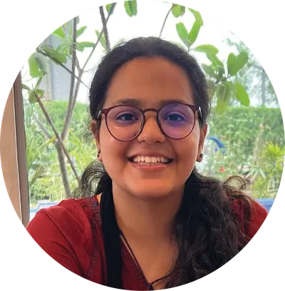
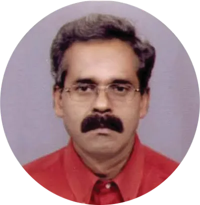
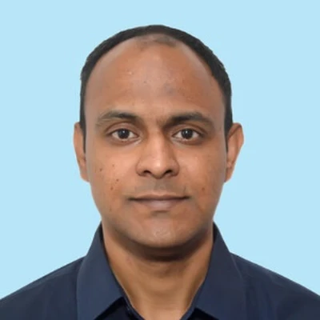

Staff
Current team & scholars
Home
Alumni
Staff & Scientists
Explore alumni from advanced research appointments who helped shape high-impact studies,
lab systems, and collaborative programs at Vyoma Lab.
Project Scientist
Dr. Ankita Sharma
Topic of research: Biomaterial design and synthesis for healthcare applications.
About: Being a Biotechnologist, Dr. Sharma is interested in Biomaterial design and synthesis for healthcare applications. Currently, she is working on shape memory Bacterial Cellulose Aerogels for Wound Healing Applications.

Sr. Project Scientist
Achievements: 2nd Prize in Research project/ idea contest-SilkTech2024.
Dr. Neha Abbasi
Topic of research: Templated carbon aerogels for humidity sensing applications.
About: Dr. Neha’s research focuses on porous materials, with prior experience in pollutant adsorption through the rational design of structure and surface chemistry. Her current work centers on the development of carbon aerogels for environmental remediation and sensing applications.Achievements: 2nd Prize in Research project/ idea contest-SilkTech2024.
Principal Project Scientist
Dr. Shama Parveen
Topic of research: MXene integrated multifunctional composites.
About: Dr. Shama Parveen obtained her PhD from the Institute for Polymers and Composites, University of Minho, Portugal, in 2016, where she worked on Microstructure and Mechanical Properties of Nanomaterial-Reinforced Cementitious Composites. She later held a postdoctoral position in the Department of Fashion and Textiles at the University of Huddersfield, UK, from 2018 to 2023. During this period, she was awarded the Seal of Excellence by the European Commission in recognition of her research proposal. She joined as a Principal Project Scientist in the Department of Textile and Fibre Engineering at the Indian Institute of Technology Delhi. Dr. Parveen’s research focuses on the fabrication of multifunctional polymeric composites for thermal management and electromagnetic interference (EMI) shielding applications. Her work involves the synthesis of conductive nanomaterials and aerogels to achieve targeted functional properties. She integrates principles of materials chemistry and interfacial engineering to develop flexible, lightweight, and high-performance materials. She has expertise in evaluating the thermal, mechanical, electrical, and electromagnetic shielding performance of advanced composites.

Project Assistant
Sureshwar Thakur
About: Maintaining and handling bills and inventory.
Project Scientist
Lacksaya Nagarajan
About: Lacksaya Nagarajan’s research focuses on advanced functional textiles and aerogel based materials, particularly hybrid aerogels and NBR Foams for thermal insulation applications. She is also an expert in bioengineering and cell culture, with work spanning bioprinting, bone tissue engineering, and the application of deep learning models in bone tissue engineering.

Principal Project Scientist
Expertise: Textile Chemistry
Publications: International: 8 papers published in Textile Chemistry, 6 papers as the first author.
Responsibilities: Operation of Newton sweating thermal mannequin, donning and doffing of garments, operation of Thermdac software. Coordination with the industries, following up, factory visits to support in scaling up. Testing the samples, interpretation of test results and report writing.
Dr. N. Srikrishna
Project: Extreme cold weather clothing (ECWC) upgradation through value addition with industry partners and limited numbers production and validation to IIT Delhi under DIA-CoE IIT Delhi (RP04910G)
Qualification: PhD Textile TechnologyExpertise: Textile Chemistry
Publications: International: 8 papers published in Textile Chemistry, 6 papers as the first author.
Responsibilities: Operation of Newton sweating thermal mannequin, donning and doffing of garments, operation of Thermdac software. Coordination with the industries, following up, factory visits to support in scaling up. Testing the samples, interpretation of test results and report writing.